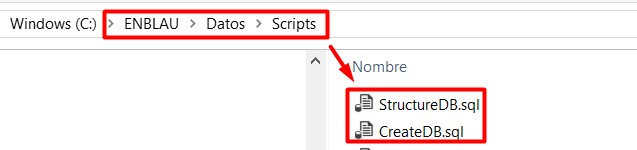
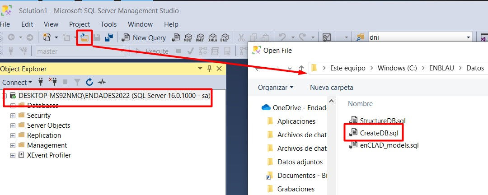

ENBLAU Environment Requirements
1. Requirements for ENBLAU App Configuration
Before proceeding with the installation and configuration of ENBLAU, it is necessary to perform some preliminary settings in the environment where the application will be installed.
1.1. Antivirus and Firewall
Follow the recommendations in section 2. Antivirus and Firewall Settings of System Configuration.
2. ENBLAU Installation
- Run the
Setup Enblau.msiinstaller provided by ENDADES with a double click.

- When the installation starts, the Endades Suite Setup window will appear. Follow these steps:

-
Accept the license terms by checking the corresponding box.

-
Specify the path where ENBLAU will be installed.

-
Click "Install" to begin the installation.

-
Complete the process.

3. SQL Server Installation and Instance Creation
To use ENBLAU, it is necessary to install SQL Server and create an instance. This can be done automatically with a .bat file or manually.
3.1. Automatic Installation with .bat
- From Windows Explorer, go to the ENBLAU installation path, for example:
C:\ENBLAU\Datos, and locate the file00 - InstalaciónSQL.bat.

- Run the
00 - InstalaciónSQL.batfile as an administrator. This will install SQL Server 2022 and create the ENDADES2022 instance.


- Verify that the instance was created correctly from SQL Server Configuration Manager:

Note: If you cannot execute the
.batfile despite having administrator permissions, it may be blocked by the antivirus or the firewall may be preventing some of the connections that the script attempts to establish. Check whether the antivirus has quarantined the file or if the firewall is restricting access to the network or specific resources.
3.2. Manual Installation
- Go to the path
C:\ENBLAU\Datosand locate the executableSQLEXPR_x64_ENU.exe. Alternatively, you can download it from:
https://www.microsoft.com/en-us/download/details.aspx?id=104781

- Run the installer and follow the guided steps:


Instance Name:
ENDADES2022


sauser password:Endades$0


4. SQL Server Management Studio (SSMS) Installation
It is recommended to install SQL Server Management Studio 20 in the environment where ENBLAU and SQL Server have been installed.
- Download the version from:
https://learn.microsoft.com/en-us/ssms/release-notes-20

- Follow the official installation instructions from:
https://learn.microsoft.com/en-us/ssms/install/install
5. ENBLAU Database Creation
5.1. Create Using .bat
- Go to the ENBLAU installation path, for example:
C:\ENBLAU\Datos, and locate the file01 - CreaciónDB.bat.

-
Run the file as administrator. It will execute the
CreateDB.sqlandStructure.sqlscripts located inC:\ENBLAU\Datos\Scripts. -
Once completed, a database named Easywork will be created in the
server\ENDADES2022instance, which will be used by ENBLAU.
Note: If you cannot execute the
.batfile despite having administrator permissions, it may be blocked by the antivirus or the firewall may be preventing some of the connections that the script attempts to establish. Check whether the antivirus has quarantined the file or if the firewall is restricting access to the network or specific resources.
5.2. Manual Creation
- Go to the ENBLAU installation path, for example:
C:\ENBLAU\Datos\Scripts, and locate theCreateDB.sqlandStructure.sqlscripts.

- Open SQL Server Management Studio, connect to the corresponding server, for example:
server\ENDADES2022. Make sure to use the sa user and password Endades$0.

- Open the
CreateDB.sqlfile first and execute it.

- Then repeat the same process with the
Structure.sqlfile.
⚠️ Important: The scripts must be executed in the indicated order: first CreateDB.sql, then Structure.sql.
6. Selecting the Database in ENBLAU
- When opening ENBLAU for the first time, you will be prompted to select a database. Click OK.

- In the enCONNECT window (app that opens for Select Database), in the Server field, select the created instance, for example:
server\ENDADES2022.

- Click Load Database, expand the corresponding field and select Easywork from the list.

7. Network Drive Connection
To connect to ENBLAU from a Windows computer, it is necessary to properly configure the network drive connection.
This step is essential for the program to function correctly.
Refer to the detailed guide in the following link:
Connect Network Drive
Note: For more information, see Possible Errors
⚠️ Important: It is mandatory to use SQL Server 2022 or higher to ensure compatibility with ENBLAU and enSITE versions.
 Español
Español
 English
English
 Italiano
Italiano
 Português
Português